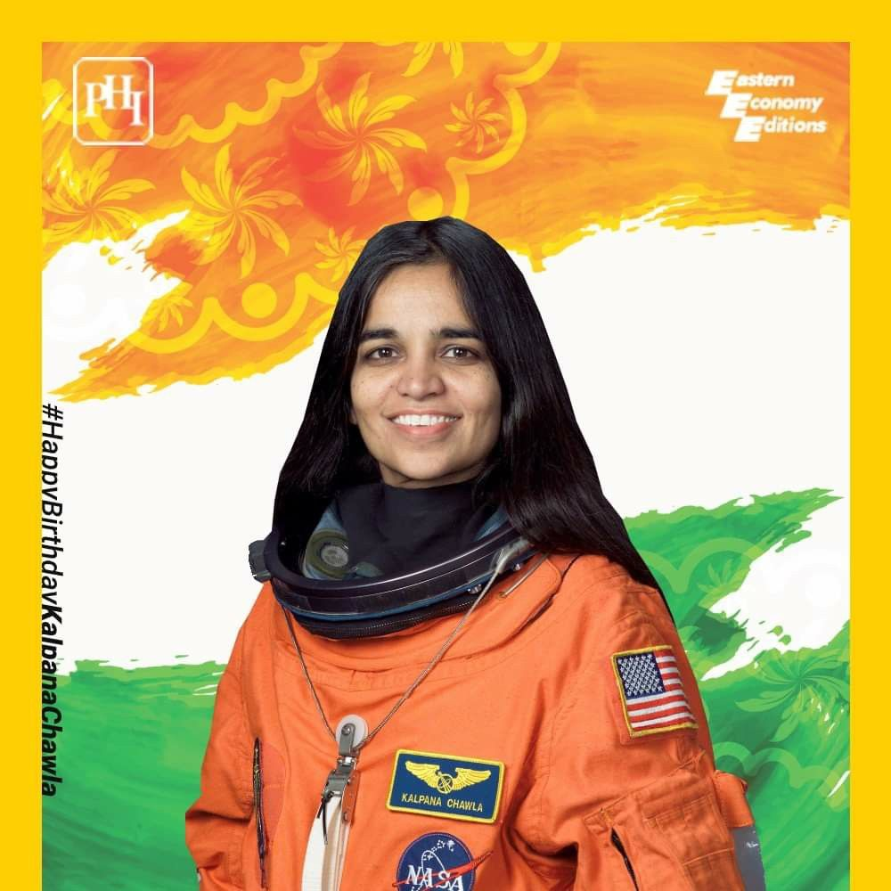

- Kalpana Chawla (March 17, 1962 – February 1, 2003) was born in Karnal, India.
She was the first Indian - American astronaut and first Indian woman in space.
She first flew on Space Shuttle Columbia in 1997 as a mission specialist and primary robotic arm operator.
In 2003, Kalpana Chawla was one of the seven crew members killed in the Space Shuttle Columbia disaster.
- EDUCATION:-
Kalpana Chawla completed her earlier schooling at Tagore Baal Niketan Sr. Sec. School, Karnal.
She completed Bachelor of Engineering degree in Aeronautical Engineering at Punjab Engineering College at Chandigarh in 1982.
She moved to the United States in 1982 and obtained a M.S. degree in aerospace engineering from the University of Texas at Arlington in 1984.
Kalpana Chawla went on to earn a second M.S. degree in 1986 and a PhD in aerospace engineering in 1988 from the University of Colorado at Boulder.
Later that year she began working at the NASA Ames Research Center as vice president of Overset Methods, Inc. where she did CFD research on Vertical/Short Takeoff and Landing concepts.
Kalpana Chawla held a Certificated Flight Instructor rating for airplanes, gliders and Commercial Pilot licenses for single and multi-engine airplanes, seaplanes and gliders.
-
NASA CAREER:-
Kalpana Chawla joined the NASA Astronaut Corps in March 1995 and was selected for her first flight in 1996.
She spoke the following words while traveling in the weightlessness of space,"You are just your intelligence".
She had traveled 10.67 million km, as many as 252 times around the Earth.
-
DEATH:-
We lost Kalpana Chawla in the Space Shuttle Columbia disaster which occurred on February 1, 2003.
when the Space Shuttle disintegrated over Texas during re-entry into the Earth's atmosphere.
with the loss of all seven crew members, shortly before it was scheduled to conclude its 28th mission, STS-107.
- AWARDS:-
Posthumously awarded
Congressional Space Medal of Honor
NASA Space Flight Medal
NASA Distinguished Service Medal